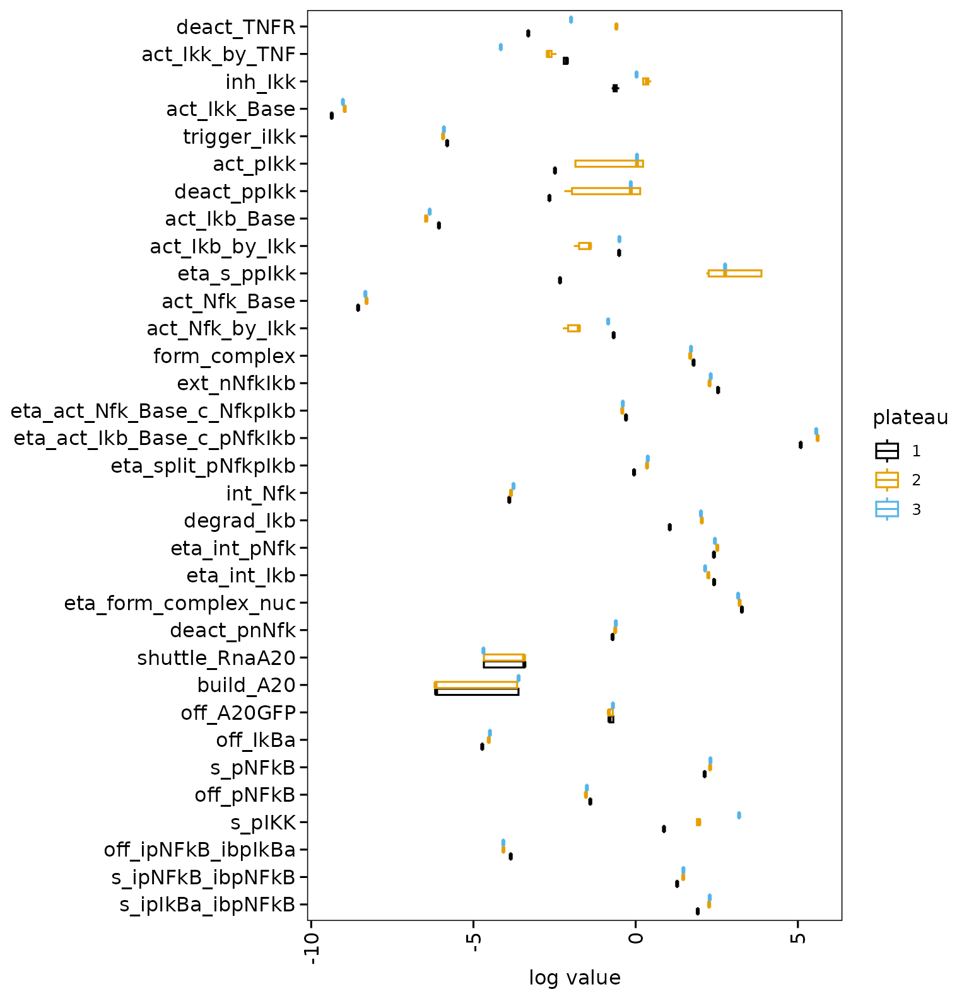

dMod2 [1] minimizes \(-2 \log L\) (with a prior, \(-2 \log\) of the posterior) by the trust-region method
trust(), from many starts by mstrust(), here
on the model of Setting up models with
the gauge of Symmetries. Derivations: Methods > Trust-region
optimization.
Trust-region method
Each iteration minimizes a quadratic model inside
a ball of radius \(r\), first rinit; the ratio of actual to predicted
decrease decides on step and radius. A trial point where the
objective fails counts as rejected. stepControl$nonmonotone
in \((0, 1)\) also accepts rising steps
(nonmonotone
acceptance) and returns the best iterate.
parlower and parupper set bounds.
boundary = "reflective" (default) keeps the iterates
strictly inside and lists bound parameters in atBound;
boundary = "clip" removes them from the subproblem and runs Gauss-Newton
only, with ftol and mtol.
Termination criteria
stopReason names the test that ended the run:
stopReason |
test | converged |
|---|---|---|
"gradient" |
largest gradient entry, scaled by the distance to a bound, at most
gtol
|
TRUE |
"fvalue" |
an accepted step changed the value by less than
ftol
|
TRUE |
"preddiff" |
predicted decrease below mtol
|
TRUE |
"step" |
step norm below xtol (default 0, off) |
TRUE |
"stagnation" |
five rejected steps in a row, value flat within
ftol
|
TRUE where the full Newton step predicts at most
mtol
|
"radius" |
radius below rmin, or a step that no longer changes the
parameters |
FALSE |
"objfun" |
three failed evaluations in a row | FALSE |
"iterlim" |
iterlim iterations |
FALSE |
"gradient", "fvalue" and
"preddiff" stop only where the full Newton step also
predicts at most mtol (Methods > Termination
criteria). ftol and gtol belong at or
above the numerical error; model.R defines them as
tolerances, passed as tolControl.
Model Hessian
hessianMethod |
model Hessian | the objective returns |
|---|---|---|
"gn" |
Gauss-Newton | value, gradient, Gauss-Newton Hessian |
"exact" |
exact (Newton) | value, gradient, exact Hessian |
"bfgs" |
damped BFGS update, positive definite | value, gradient |
"sr1" |
symmetric rank-one update, possibly indefinite | value, gradient |
The default is the hybrid of Fides [2]: Gauss-Newton until the
radius stayed the same for 20 iterations, then BFGS (Methods > Hessian
phases). The sparse
path, multiple
shooting and boundary = "clip" run Gauss-Newton. With
an error model the
Gauss-Newton Hessian can be indefinite (Methods
> Gauss-Newton with an error model). "exact" needs a
chain built with derivMode = "forward-forward" or
"forward-reverse" (Sensitivities). Quasi-Newton
settings, entries of qnControl:
| entry | default | controls |
|---|---|---|
hessianInit |
"gn" |
seed:
"gn", "identity", "exact", or
"tracked" (later phases) |
hessianReseed |
"never" |
"stall": reseed instead of stopping on stagnation, up
to 8 times |
qnMemory |
0 |
0 accumulates all updates; \(m > 0\) rebuilds from the last \(m\) pairs |
qnCautious |
1e-8 |
cautious test of
BFGS; 0 turns it off |
qnRejected |
TRUE for "sr1"
|
SR1 also updates from rejected trial points |
Hessian phases and reverse sweep
phases runs several sources in turn (Hessian phases), each a
list with hessianMethod and optionally
iterlim, radiusStall, sweep,
keepRadius, onStop and qnControl.
A phase hands over on a stop other than "gradient", on
iterlim or after radiusStall iterations at one
radius; switches bounds the handovers.
fit <- trust(obj, best, fixed = gauge, tolControl = tolerances,
phases = list(list(hessianMethod = "gn"), list(hessianMethod = "sr1")))
fit[c("phaseIterations", "evalBySource", "nSwitch", "stopReason")]sweep = "reverse" computes the gradient of a
quasi-Newton phase by one backward sweep, for
models built with derivMode = c("forward", "reverse"); a
"bfgs" or "sr1" phase does so by default.
Sparse Hessians
sparse = TRUE uses sparse Cholesky factors, plus a low-rank part, for many
parameters that each act on few conditions; it reaches the same fit as
the dense path. "auto" (default) takes it from 100
parameters on where it costs fewer flops
(options(dMod2.sparseAuto = )).
Arguments and result
| argument | default | controls |
|---|---|---|
rinit, rmax
|
0.1, 10
|
first and largest radius |
iterlim |
1000 |
iterations over all phases |
hessianMethod |
Gauss-Newton, then BFGS | source of the model Hessian |
phases, switches
|
none | several sources in turn |
parlower, parupper,
boundary
|
none, "reflective"
|
bounds |
tolControl |
ftol, mtol, gtol
1e-6; xtol, rmin 0;
ctol 1e-6
|
termination; ctol for multiple shooting |
qnControl |
see above | quasi-Newton update |
stepControl |
thetaMax = 0.99995, nonmonotone = 0
|
step; further entries for multiple shooting |
minimize |
TRUE |
FALSE maximizes |
sparse |
"auto" |
sparse path |
blather, printIter,
traceFile
|
FALSE, FALSE, none |
trace in the result, printed values, CSV log |
Other arguments go to the objective, such as fixed. The
trustfit holds argument, value,
gradient, hessian, iterations,
converged, atBound and
stopReason.
Single fit
onefit.R fits from one start drawn with standard
deviation 0.5 around the best fit; the fit is loaded from
results/onefit.rds:
# the start drawn with standard deviation 0.5 around the best fit, and drawn again where the
# model cannot be evaluated
best <- as.parvec(readRDS("results/fits.rds"))
set.seed(1)
fit <- mstrust(obj, best, fixed = gauge, sd = 0.5, fits = 1, rinit = 0.1, rmax = 10,
iterlim = 1000, tolControl = tolerances)[[1]]Multistart fitting
mstrust() fits from many starts (multistart);
as.parframe() sorts the fits by value. fit.R
draws 200 starts from the prior of Setting up models:
# 200 fits from starts drawn from the prior; a start at which the model cannot be evaluated is
# replaced by the next draw. helix.R runs the same fits as 100 array tasks of 2 fits each.
free <- setdiff(names(mu), names(gauge))
set.seed(1)
fits <- mstrust(obj, mu[free], fixed = gauge, sd = sigma[free], fits = 200, iterlim = 1000,
tolControl = tolerances, cores = getOption("dMod2.cores")) |>
as.parframe()Arguments go by name to trust(), the sampler or the
objective; set.seed() reproduces a run for any
cores.
| argument | default | controls |
|---|---|---|
center |
center of the starts, or a parframe of starts | |
fits |
20 |
number of fits |
samplefun |
"rnorm" |
sampler of the offsets |
startFromCenter |
FALSE |
first fit starts at center
|
retry, nTries
|
TRUE, 10
|
a failed fit restarts from the next draw |
cores |
1 |
parallel fits, or c(fits = , conditions = )
|
optmethod |
"trust" |
optimizer, e.g. "trustL1"
|
output, cautiousMode
|
FALSE |
write fits to resultPath during the run |
msParframe() draws shareable starts;
load.parlist() reads the fits of a running or aborted run.
The fits of fit.R (Remote computing) are loaded from
results/fits.rds:
c(fits = nrow(fits), converged = sum(fits$converged), best = min(fits$value),
withinOne = sum(fits$value < min(fits$value) + 1))
#> fits converged best withinOne
#> 200.0000 187.0000 -488.6774 15.0000Sorted values; each plateau is a local optimum:
# every fit on a pseudo-log scale; each plateau is a local optimum
plotValues(fits, pseudoLog = TRUE)
Parameters that differ by more than 0.1 between the plateaus within 5 of the best:
pl <- plotPars(fits, value < min(value) + 5)
med <- with(pl$data, tapply(parvalue, list(name, step), median))
differ <- rownames(med)[apply(med, 1, function(m) diff(range(m, na.rm = TRUE))) > 0.1]
pl$data <- subset(pl$data, name %in% differ)
pl +
coord_flip() +
scale_x_discrete(limits = rev) +
labs(x = NULL, y = "log value", color = "plateau")
Comparison of Hessian sources
optimizers.R fits from the same 100 starts with several
Hessian sources, loaded from results/optimizers.rds.
hits counts the fits within 5 of the best value:
opt <- readRDS("results/optimizers.rds")
top <- min(opt$value, na.rm = TRUE)
shown <- c("default (Fides hybrid)", "Gauss-Newton", "BFGS", "exact", "GN, then BFGS", "GN, then BFGS at stall 50", "SSR1, scaled",
"GNSBFGS")
opt <- opt[opt$method %in% shown, ]
method <- factor(opt$method, shown)
t(rbind(converged = tapply(opt$converged, method, sum),
hits = tapply(opt$value < top + 5, method, sum, na.rm = TRUE),
secondsPerHit = round(tapply(opt$elapsed, method, sum, na.rm = TRUE) /
tapply(opt$value < top + 5, method, sum, na.rm = TRUE))))
#> converged hits secondsPerHit
#> default (Fides hybrid) 92 21 238
#> Gauss-Newton 84 21 222
#> BFGS 85 17 91
#> exact 97 15 1247
#> GN, then BFGS 91 21 64
#> GN, then BFGS at stall 50 85 21 114
#> SSR1, scaled 95 25 161
#> GNSBFGS 88 20 154The exact Hessian converges most often, scaled SR1 (structured secant updates) reaches the best plateaus most often, and Gauss-Newton followed by BFGS on the reverse gradient needs the least time per hit. Details: Methods > Forward and reverse derivatives on the Oppelt fit.
L1 penalties
trustL1() adds the L1 penalty \(\sum_i \lambda_i \lvert \theta_i - \mu_i
\rvert\) for the parameters named in mu; a scan over
lambda selects the parameters that differ from the
reference. one.sided, gate and
fuse vary the penalty (Methods > L1
penalties).
Multiple shooting for oscillating or spiking systems: Methods > Multiple shooting.
Reference: trust(), mstrust(),
trustL1(), msParframe(),
as.parframe(), load.parlist(),
plotValues(), plotPars(),
normL2()